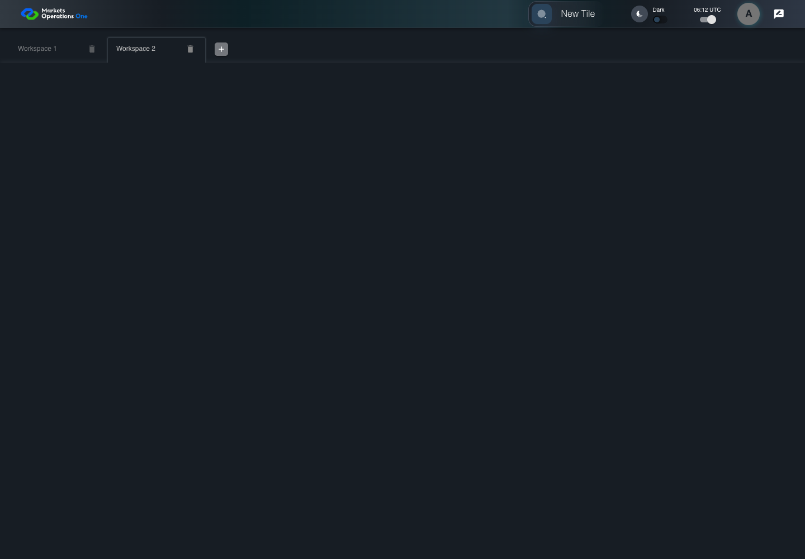

UI-SHL-021 unregistered workspace has no refresh action
PASS · application/run-050/ui-shl-021-unregistered-workspace-has-no-refresh-action-0101a5b44aa1-attempt-1 · ACTUAL_APPLICATION_LOCAL_SERVICES
Actual current MFE; controlled accepted login, validation, and activity renewal; unsigned fixture JWT; explicit stored workspaces. No real identity, server authorization, or backend persistence verification.
2026-10-22T06:12:18.783Z to 2026-10-22T06:12:21.396Z
Assertions and result · Artifact manifest · Exact run inputs and source hashes
Result SHA-256:0bc6b694ab14282921bf9a641a066edb1eda5f67bd23b1e2e84591b635b4966bMachine observations
- stored-workspace-setup.json
ee86c8d4d21a8ae82a25c65a8971d3c6b9296e6ad57a5677f359693a109c775e
Screenshot capture: CAPTURED. Named frames: 5.
Step screenshot evidence: COMPLETE. 4/4 canonical steps have execution screenshots.
Canonical step timeline
Given User A is authenticated as fixture UI-USER-01 with the case-specific permissions
Execution: PASSED.
1. step-01 Visible state after step 1: Given User A is authenticated as fixture UI-USER-01 with the case-specific permissions
2026-10-22T06:12:20.458Z · 1440×1000
Step: /Users/lushevol/code/github/ratan-release-impact/workbench/tasks/ui-test-coverage-20261022/test-cases.md:6032
SHA-256:faf00075515f8d7add1c2233bf616fc37c6052c24079fb9ee73f2ee0a68c0a49And W2 has no registered refresh callback
Execution: PASSED.2. step-02 Visible state after step 2: And W2 has no registered refresh callback
2026-10-22T06:12:20.537Z · 1440×1000
Step: /Users/lushevol/code/github/ratan-release-impact/workbench/tasks/ui-test-coverage-20261022/test-cases.md:6033
SHA-256:3aa6d4445d3cd506812899aaa9d1f78d7a04a48e835520be1599632494825ba4When User A clicks tab with source identity "Workspace Name textbox value Workspace 2" inside the shell tablist named "workspaces"
Execution: PASSED.
3. step-03 Visible state after step 3: When User A clicks tab with source identity "Workspace Name textbox value Workspace 2" inside the shell tablist named "workspaces"
2026-10-22T06:12:20.736Z · 1440×1000
Step: /Users/lushevol/code/github/ratan-release-impact/workbench/tasks/ui-test-coverage-20261022/test-cases.md:6034
SHA-256:87a81cec1eb5e6f59b29bf14db3b6be48eaa1d3dfc1e9f0288b2adf19ec74178Then icon button named "refresh" inside the W2 workspace tab is absent
Execution: PASSED.
4. step-04 Visible state after step 4: Then icon button named "refresh" inside the W2 workspace tab is absent
2026-10-22T06:12:20.819Z · 1440×1000
Step: /Users/lushevol/code/github/ratan-release-impact/workbench/tasks/ui-test-coverage-20261022/test-cases.md:6035
SHA-256:87a81cec1eb5e6f59b29bf14db3b6be48eaa1d3dfc1e9f0288b2adf19ec74178
Additional named frames

The final visible state after the named test assertions.
2026-10-22T06:12:20.957Z · 1440×1000Step: Test source: /Users/lushevol/code/github/ratan-release-impact/workbench/e2e/audit-specs/workspace-edges.spec.ts:117
SHA-256:
87a81cec1eb5e6f59b29bf14db3b6be48eaa1d3dfc1e9f0288b2adf19ec74178Screenshots establish visible state only. Assertions and traces support functional claims.